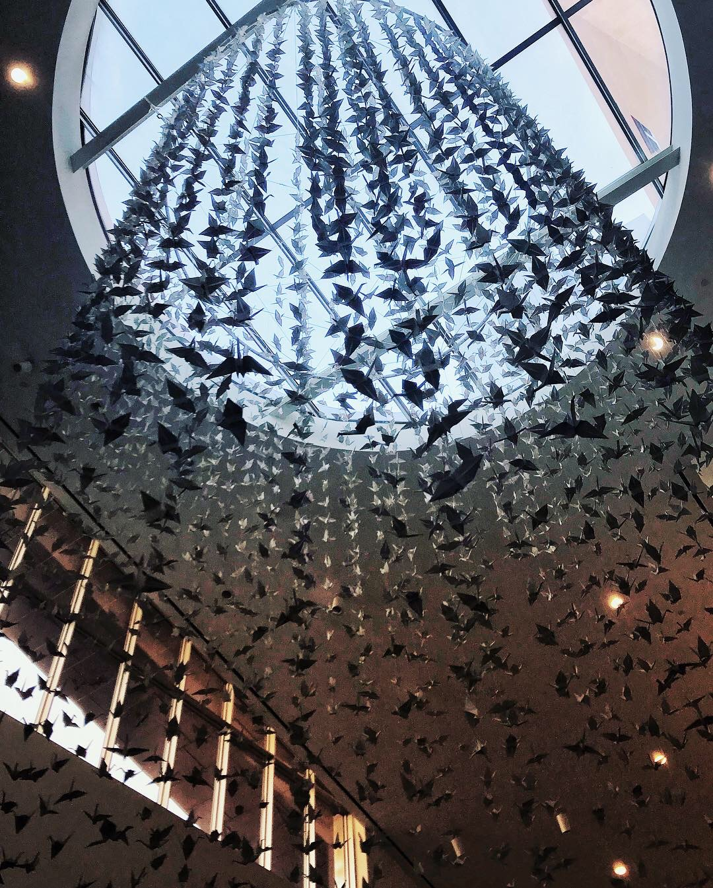
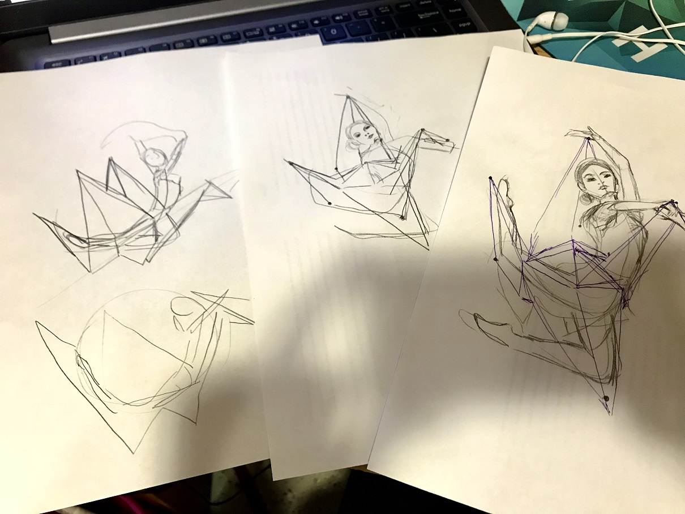
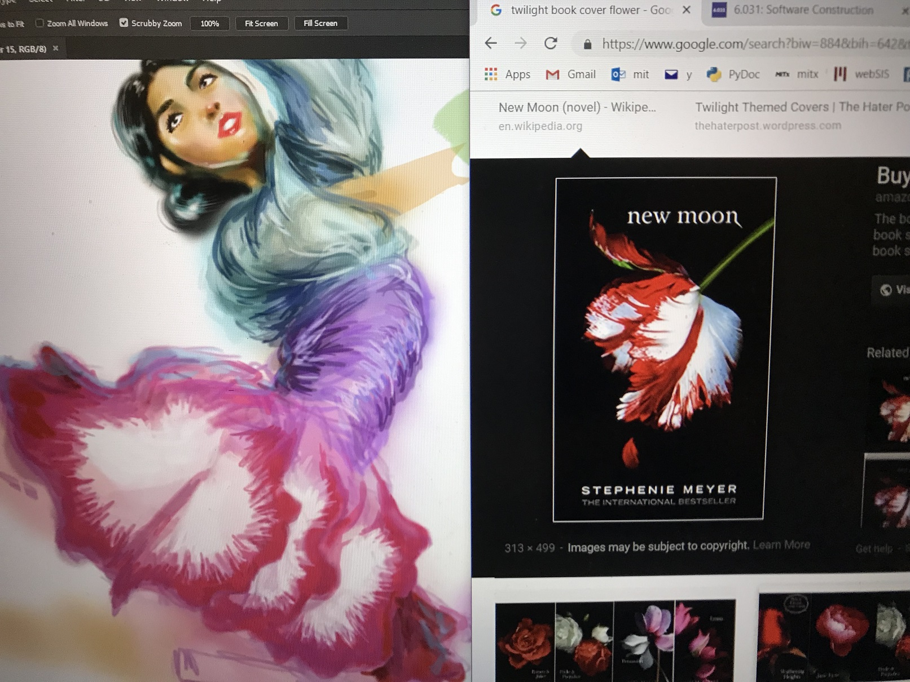
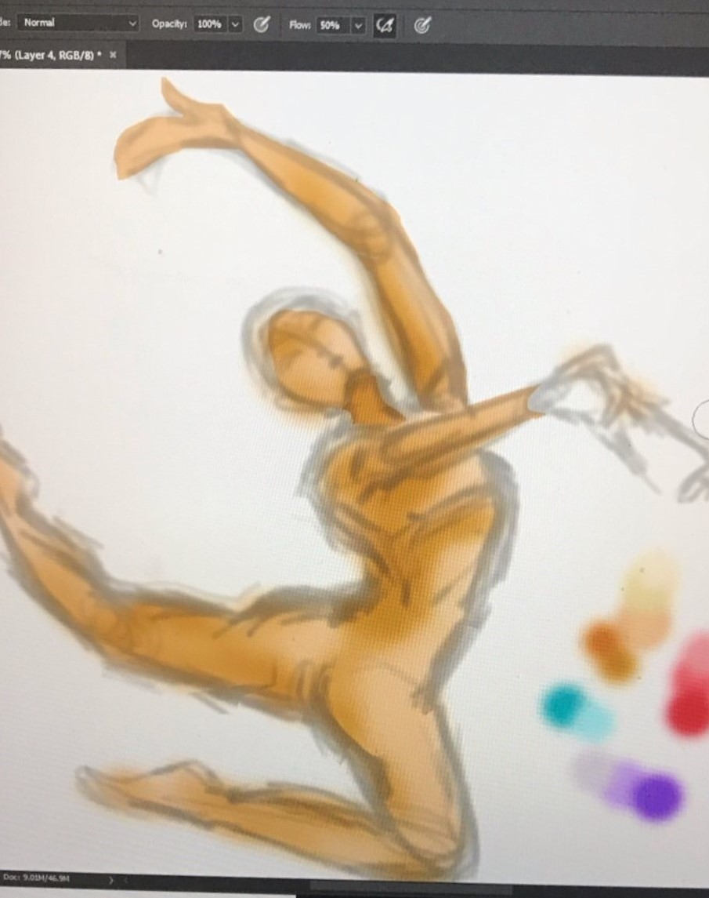
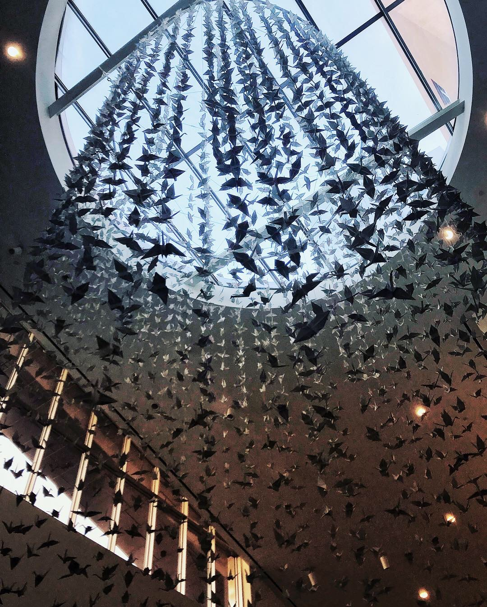
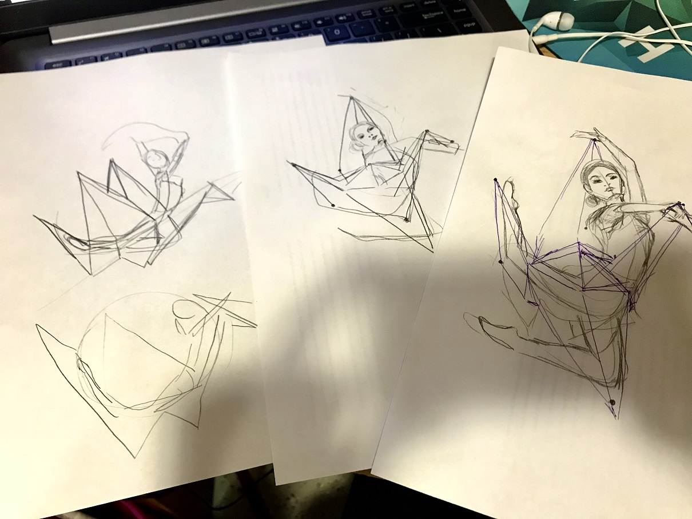
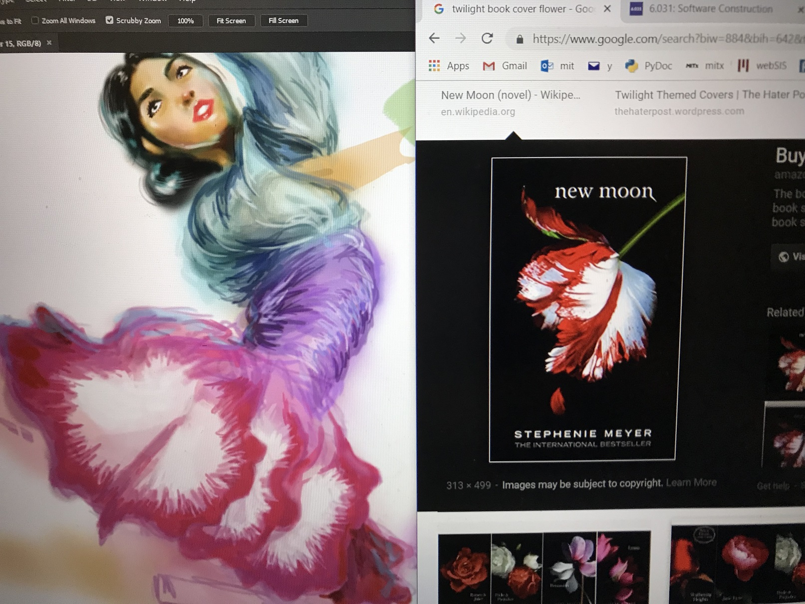
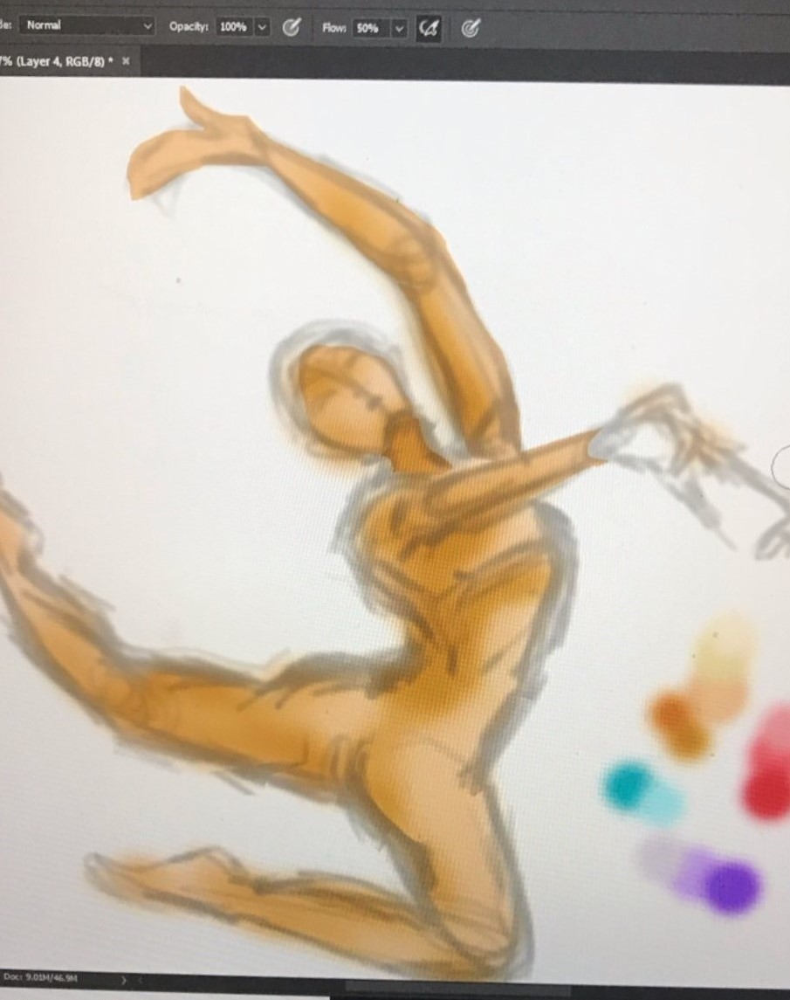

On the last day of my first semester of college, I took a detour from my usual path between classes and ended up stumbling upon Collier's Cranes, a beautiful installation/hack honoring the late Officer Sean Collier. Relieved to be done with a very, very long semester, I recall pausing under the cranes to savor the light pouring in from the skylight. In that moment, I felt free as a bird.
Less than a week prior, I had been busy with the Asian Dance Team (ADT) end-of-semester showcase. Throughout the semester, I had gone to weekly rehearsals as a part of the ADT group performing Pick Me, but I hadn’t gotten the chance to see other ADT groups perform. At showcase, I was mesmerized by the sheer beauty and grace of the groups doing traditional Asian dance.
Inspired by these two experiences, I decided to paint something. I had recently bought a graphics tablet and was itching to try it out. Studying for finals gave me the perfect excuse to procrastinate. It took some experimentation with posing to get the dancer’s form to resemble an origami crane. Though this piece took me forever (Photoshop is not intuitive tbh), I am satisfied with how my first digital painting turned out!
P.S. Does the skirt's design look familiar...?
 






